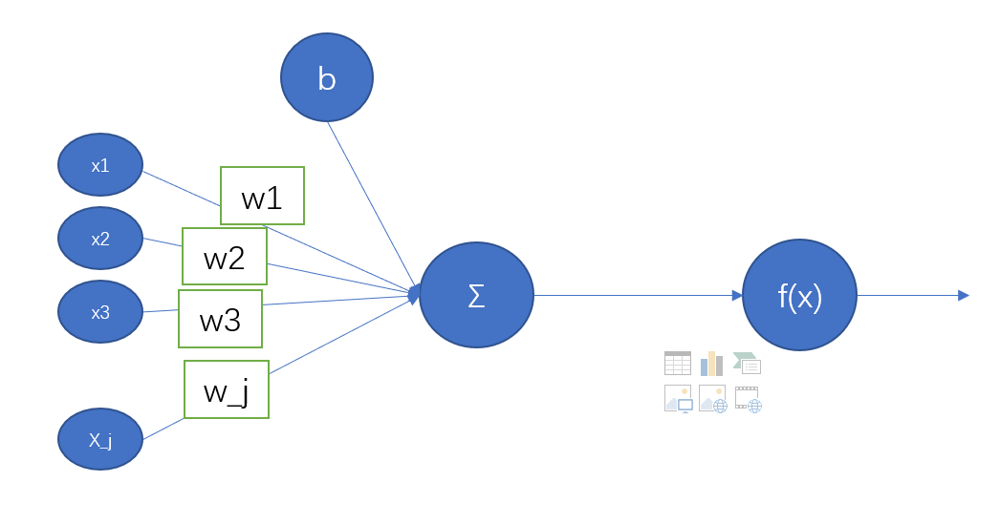

声明: 本文由DataScience编辑发表, 转载请注明本文链接mlln.cn, 并在文后留言
转载.
本文代码运行环境:
- windows10
- python3.6
- jupyter notebook
- tensorflow 1.x
- keras 2.x
感知器

感知器是一种简单的算法，输入是一个向量$x$, 向量$x$由$m$个数构成$(x_1，x_2，...，x_n)$，通常称为输入特征或简单特征，输出是1或0。在数学上，我们定义感知器为：
第一部计算输入值, $z和b$都是一个实数, $wx$代表点积$\sum_{j=1}w_j x_j $
激活函数平滑化
sigmoid函数
它能够把输入的连续实值“压缩”到0和1之间。
特别的，如果是非常大的负数，那么输出就是0；如果是非常大的正数，输出就是1.
sigmoid 函数曾经被使用的很多，不过近年来，用它的人越来越少了。主要是因为它的一些 缺点：
Sigmoids saturate and kill gradients. sigmoid 有一个非常致命的缺点，当输入非常大或者非常小的时候（saturation），这些神经元的梯度是接近于0的，从图中可以看出梯度的趋势。所以，你需要尤其注意参数的初始值来尽量避免saturation的情况。如果你的初始值很大的话，大部分神经元可能都会处在saturation的状态而把gradient kill掉，这会导致网络变的很难学习。
Sigmoid 的 output 不是0均值. 这是不可取的，因为这会导致后一层的神经元将得到上一层输出的非0均值的信号作为输入。 产生的一个结果就是：如果数据进入神经元的时候是正的(e.g. x>0 elementwise in f=wTx+b)，那么 w 计算出的梯度也会始终都是正的。 当然了，如果你是按batch去训练，那么那个batch可能得到不同的信号，所以这个问题还是可以缓解一下的。因此，非0均值这个问题虽然会产生一些不好的影响，不过跟上面提到的 kill gradients 问题相比还是要好很多的。
tanh函数
tanh 是上图中的右图，可以看出，tanh 跟sigmoid还是很像的，实际上，tanh 是sigmoid的变形。tanh优于sigmoid的地方在于它的输出是均值为0的。
relu函数

relu函数近年来越来越火, 它的函数形式如下:
$$
f(x) = max(0, x)
$$
使用keras实现简单感知机
假设一个神经元有三个输入值$(x_1, x_2, x_3)$
1 | from keras.models import Sequential |
可视化model:
1 | from keras.utils import plot_model |
Keras实战
使用keras实现如下网络结构, 并训练模型:

使用场景:
输入值$(x_1, x_2, x_3)$代表人的身高体重和年龄, 输出值$(y_1, y_2)$
1 | import numpy as np |
创建模型
1 | model = Sequential() |
编译模型
需要指定优化器和损失函数:
1 | model.compile(optimizer='rmsprop', |
训练模型
1 | # 转换成one-hot格式 |
Epoch 1/10
1000/1000 [==============================] - 0s 235us/step - loss: 0.6743 - acc: 0.7180
Epoch 2/10
1000/1000 [==============================] - 0s 86us/step - loss: 0.6162 - acc: 0.7310
Epoch 3/10
1000/1000 [==============================] - 0s 88us/step - loss: 0.5592 - acc: 0.7570
Epoch 4/10
1000/1000 [==============================] - 0s 87us/step - loss: 0.5162 - acc: 0.7680
Epoch 5/10
1000/1000 [==============================] - 0s 89us/step - loss: 0.4867 - acc: 0.7770
Epoch 6/10
1000/1000 [==============================] - 0s 88us/step - loss: 0.4663 - acc: 0.7830
Epoch 7/10
1000/1000 [==============================] - 0s 87us/step - loss: 0.4539 - acc: 0.7890
Epoch 8/10
1000/1000 [==============================] - 0s 86us/step - loss: 0.4469 - acc: 0.7920
Epoch 9/10
1000/1000 [==============================] - 0s 88us/step - loss: 0.4431 - acc: 0.7940
Epoch 10/10
1000/1000 [==============================] - 0s 88us/step - loss: 0.4407 - acc: 0.7900
进行预测
1 | test_data = np.array([[0, 0, 0]]) |
女生
关键词解释
- input_dim: 输入的维度数
- kernel_initializer: 数值初始化方法, 通常是正太分布
- batch_size: 一次训练中, 样本数据被分割成多个小份, 每一小份包含的样本数叫做batch_size
- epochs: 如果说将所有数据训练一次叫做一轮的话。epochs决定了总共进行几轮训练。
- optimizer: 优化器, 可以理解为求梯度的方法
- loss: 损失函数, 可以理解为用于衡量估计值和观察值之间的差距, 差距越小, loss越小
- metrics: 类似loss, 只是metrics不参与梯度计算, 只是一个衡量算法准确性的指标, 分类模型就用accuracy
注意
本文由jupyter notebook转换而来, 您可以在这里下载notebook
有问题可以直接在下方留言
或者给我发邮件675495787[at]qq.com
请记住我的网址: mlln.cn 或者 jupyter.cn